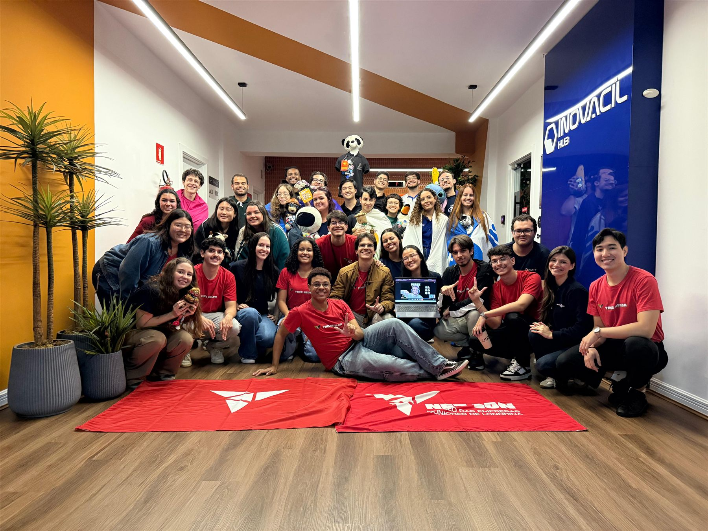
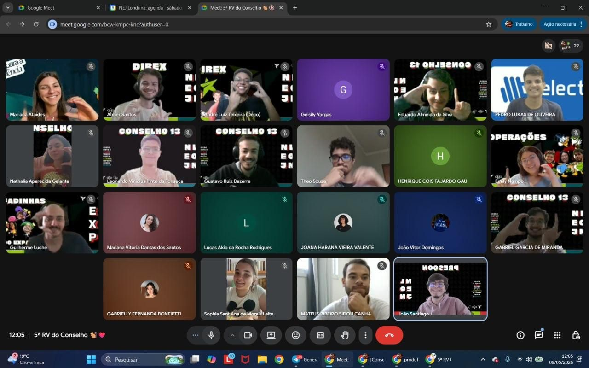
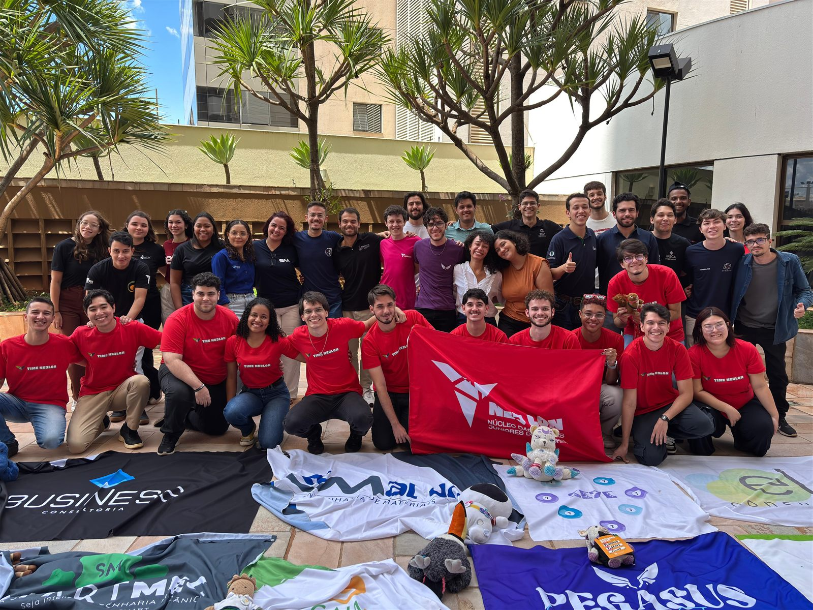
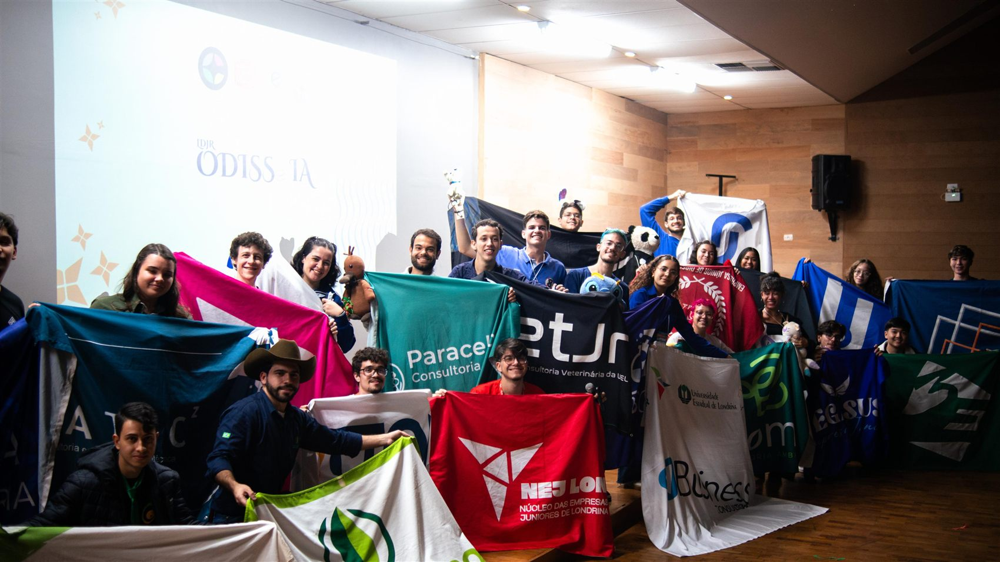
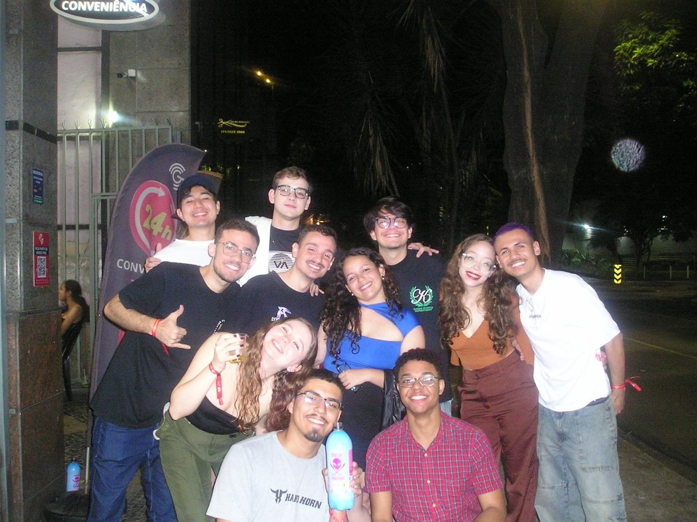
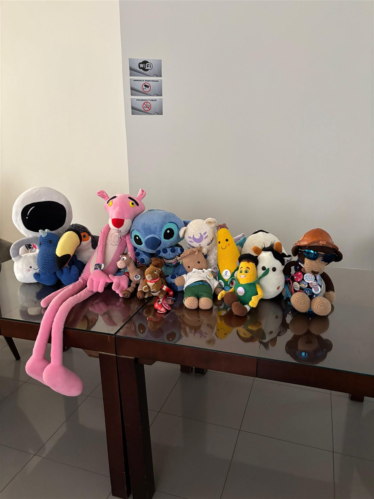
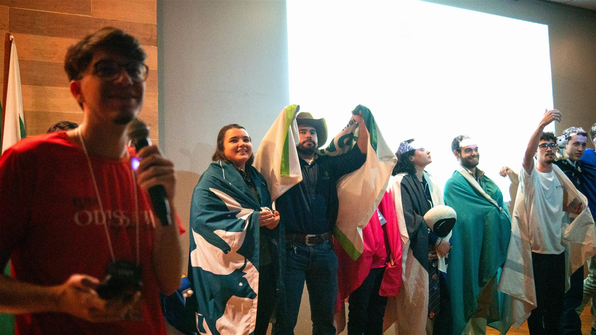
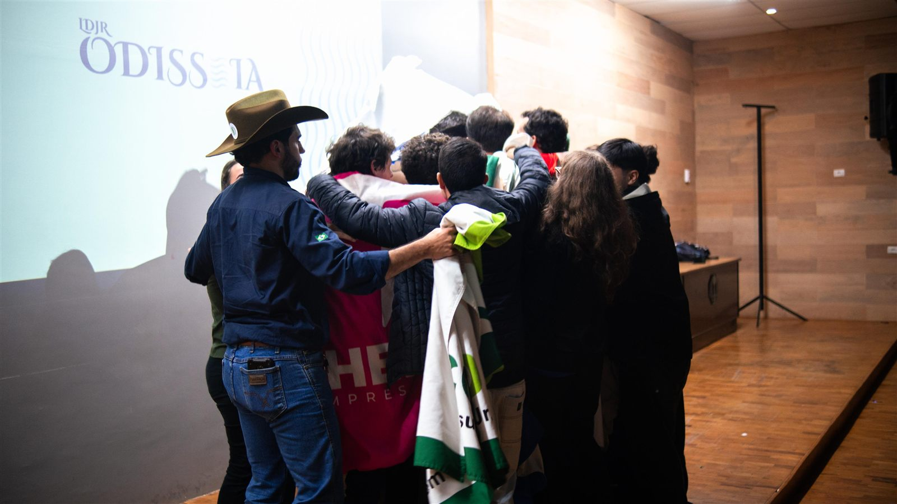
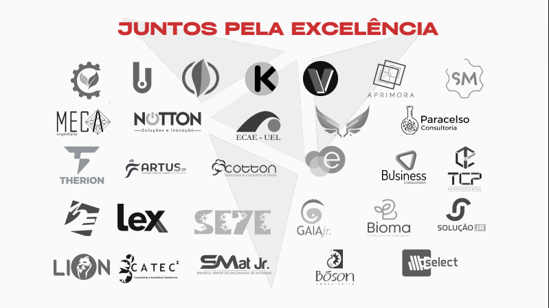
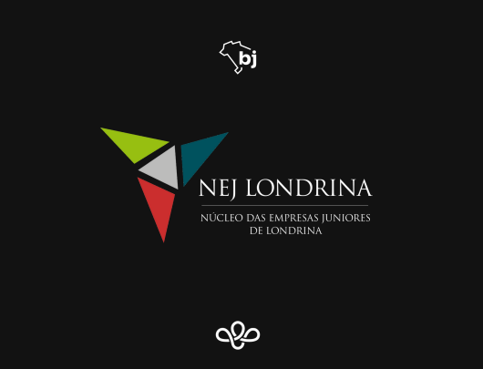

Acionista
Pensar no NEJ como um todo antes de olhar só para a realidade da própria EJ.

Conselho NEJ Londrina · 2026
Bora dar uma olhada no nosso ano? Tem reunião, perrengue, mascote e muita história no meio.
Pra começar
No começo, tinha mais pergunta do que resposta. A gente foi entendendo o papel do Conselho na prática: ouvindo cada EJ, discordando, decidindo e ajustando a rota no caminho.
Do nosso jeito.
Lá do começo
Entre uma call e outra, a gente foi se conhecendo, trocando ideia e criando espaço para falar do que realmente importava para cada EJ.

Os trios mudavam. A conversa continuava.
Fora da tela
Vieram os encontros presenciais, as bandeiras, os mascotes e aquele caos organizado que só quem estava lá entende. O Conselho deixou de ser só um horário na agenda.


Cada EJ com seu jeito.
Todo mundo no mesmo Conselho.
As três lentes, na prática
Pensar no NEJ como um todo antes de olhar só para a realidade da própria EJ.
Levar a conversa do Conselho para a EJ — e trazer a voz da EJ de volta para a mesa.
Dizer o que funcionava, o que não funcionava e o que precisava ser melhor para a rede.
Nosso jeito de fazer
Momento biscoito, mascotes ocupando a mesa, apresentações que viravam história e muita conversa depois da pauta. Era trabalho — mas tinha a nossa cara.



Nem tudo foi foto bonita
A gente reviu rota, alinhou expectativa, chamou para a conversa e seguiu. Não porque foi simples, mas porque ainda tinha algo que valia construir junto.

As regras não negociáveis
Sem pauta e sem ata
Toque para ampliar e lembrar de mais um pedaço.
Olha quanta gente tinha nessa história

E foi isso
Talvez nenhuma foto conte o ano inteiro. Mas, olhando tudo de novo, dá para lembrar: a gente fez bastante coisa acontecer por aqui.
Valeu por ter feito parte.
